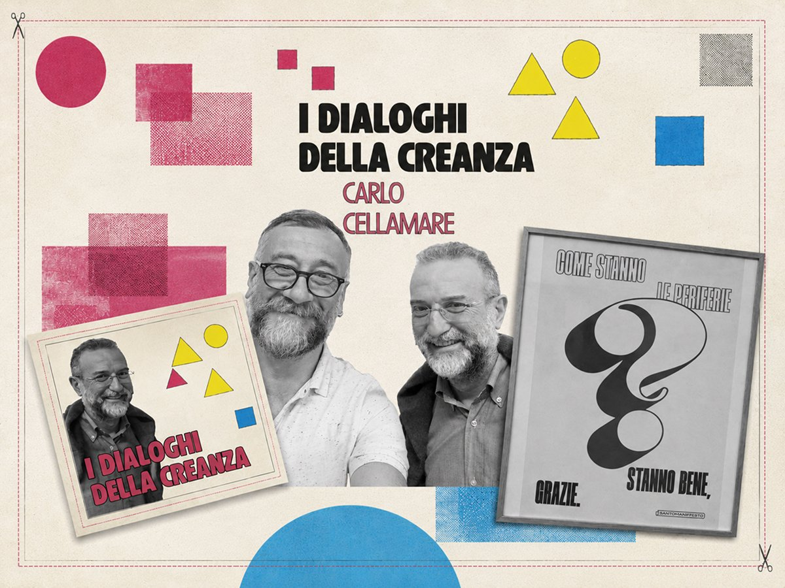
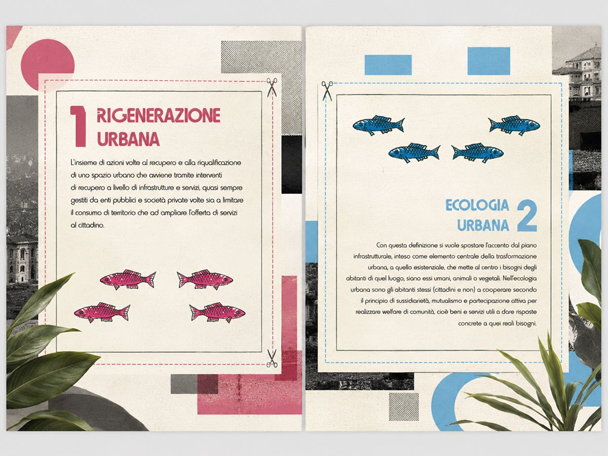
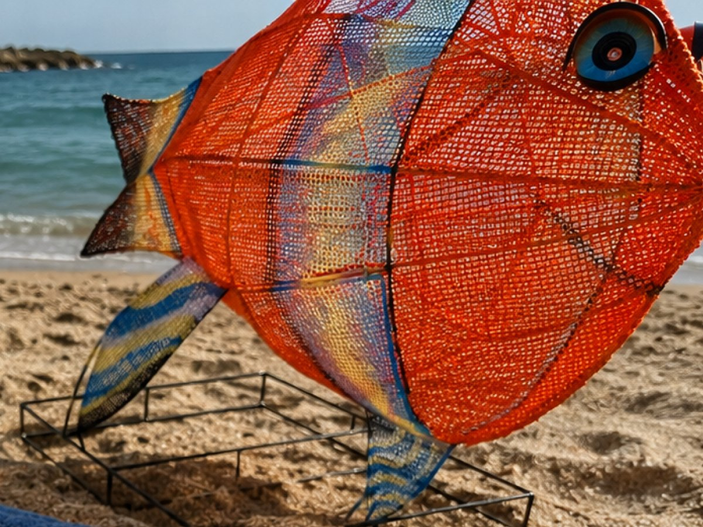

Riverrun
Social media management and content creation

Translating a territorial approach into social language.
Riverrun is an association active in organising cultural activities and enhancing historical memory, working closely with people and neighbourhoods. The task was not to promote events — it was to find a language capable of returning the complexity of their approach: community-based, participatory, rooted in the territory.
From the editorial calendar to publication, through content creation.
"Collage, play, printed paper brought to social. Each project with its own aesthetic — because every community has its own voice."





Giorgino — discovering without invading
Giorgino is a small fishing village, a neighbourhood of Cagliari marginalised by institutions. The project built a tourism-gamification system that doesn't stimulate an invasion of the place — it encourages an almost solitary discovery of those streets, the secrets they hide, the voices the neighbourhood jealously guards.
QR codes placed around the neighbourhood allow you to listen to the voice of those who saw that place born and grow: oral memory as cultural infrastructure. Around it, neighbourhood festivals — food, music, solidarity exchange — told through features using quizzes and game dynamics to bring people closer without simplifying. Stories and comments as truly interactive spaces, not decorative ones.

